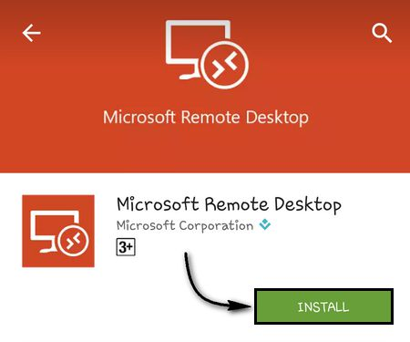
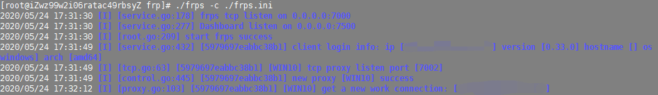
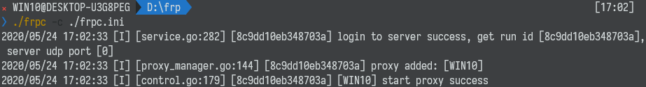
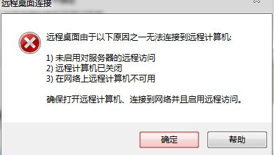

为什么要内网穿透（Intranet penetration）？
利用Windows自带的远程桌面功能，通过微软提供的RD Client APP（移动端）或者Windows、MacOS端的官方Windows远程桌面连接软件，可以实现在自己的电脑进行远程办公、学习等。由于是官方的软件，其交互体验会明显好于市面上其他远程桌面软件（TeamViewer、Client等；但我强烈推荐VNC Server）。美中不足的是，该软件不为用户提供服务器——也就是说，你的电脑如果不是一台有固定IP的服务器，它只能通过局域网进行访问；即一旦脱离与电脑相同的局域网，你就没有办法对其控制了。

为了实现在全球任意一个地方都能通过RD Client APP控制自己的非固定IP Windows机，可以采取内网穿透（Intranet penetration）方案。
由于昨天刚白嫖了阿里云的半年学生云主机，决定利用这个ECS服务器实践一下。FRP (Fast Reverse Proxy)提供了内网穿透的高性能的反向代理功能，支持 TCP ， UDP ， HTTP ， HTTPS 协议。
具体配置过程参考了：
- https://blog.csdn.net/baotangyin/article/details/104967795
- https://yq.aliyun.com/articles/603533
- https://blog.csdn.net/hesongzefairy/article/details/105543161?utm_medium=distribute.pc_relevant.none-task-blog-baidujs-1
在此不再赘述。
在服务端frp目录下执行命令：
1 | ./frps -c ./frps.ini |
在客户端frp目录下执行命令：
1 | ./frpc -c ./frpc.ini |
成功后的服务端、客户端状态分别如下：


但最后一步遇到了问题，无法在电脑/移动端通过”IP地址+端口”的方式连接主机，电脑端的报错如下：

该错误相当常见，并不能直接推断出是哪一步出了问题。注意到我可以在局域网内控制主机桌面的，因而猜测不是客户端配置的问题。随后发现问题的原因是：服务器上的防火墙拦截了用到的端口。通过下面两个操作中的任意一个，就可以远程连接桌面了！
简单地关闭防火墙
1
systemctl stop firewalld.service
或者令防火墙放行用到的若干端口
1
2
3
4
5systemctl restart firewalld.service
firewall-cmd --permanent --zone=public --add-port=7000/tcp
firewall-cmd --permanent --zone=public --add-port=7002/tcp
firewall-cmd --permanent --zone=public --add-port=7500/tcp
systemctl restart firewalld.service #不要省略两次重启防火墙的操作，否则可能无法生效随后通过以下命令可以验证端口XXXX是否被允许：
1
firewall-cmd --query-port=XXXX/tcp
下面的两条命令都可以查看当前放行的端口：
1
2netstat -tlunp #包含系统调用的其他端口
firewall-cmd --list-ports #仅包含你刚刚设置的端口如果用到的端口都在了，那就说明服务端的端口放行没有问题了：）